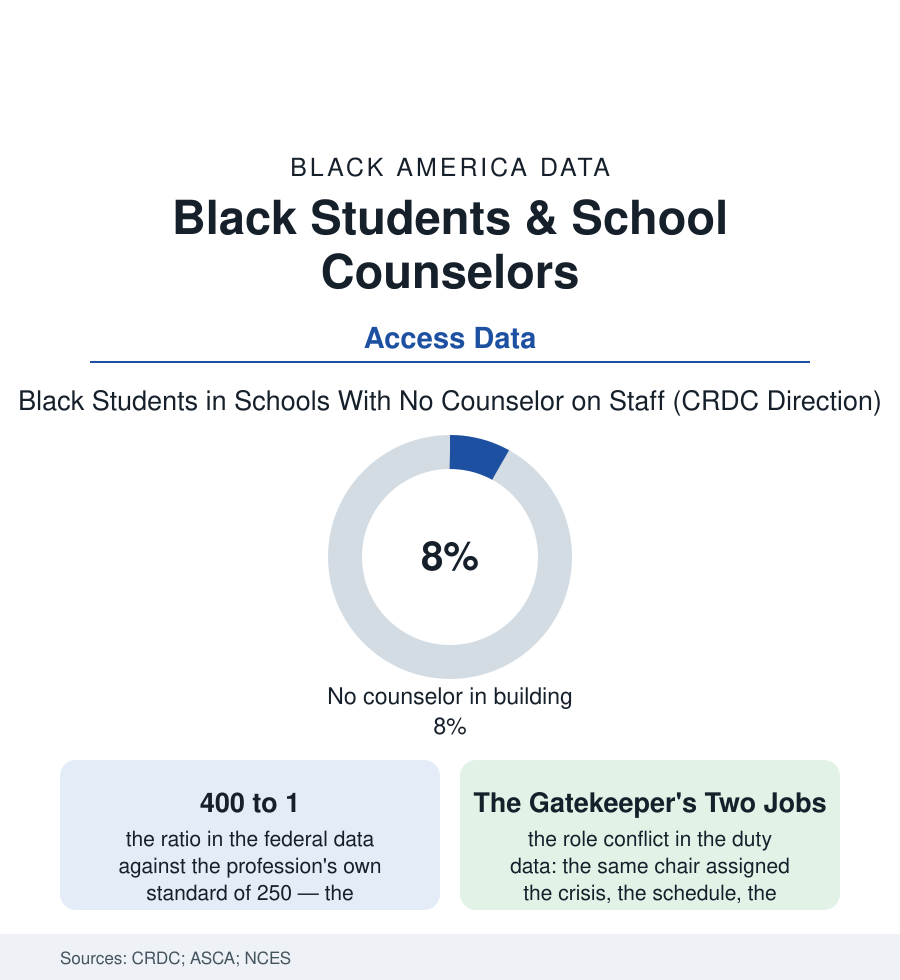

Black Education
The Counselor's Caseload: 400 Students, One Chair
The school counselor is the gatekeeper of every file in this section — the courses, the colleges, the crises — and she carries four hundred students, in schools where the chair is sometimes empty altogether. The counselor file.

Every gate in this section has a keeper, and it is usually the same person: the school counselor assigns the algebra of the gate file, holds the college list of the application file, receives the crisis the health file counts, and signs the schedule that decides them all. She does it, in the federal data, for about four hundred students at a time. This article reads the counselor file.
The Ratio and the Triage
The numbers are the CRDC's, published school by school: the national counselor ratio running near 400-to-1 against the profession's recommended 250, the distribution skewed against this book's schools in the familiar gradient — the high-poverty building's counselor spread thinnest, the elementary counselor rarest of all (the youngest children's chair often a part-time ghost), and a stubborn share of Black students enrolled, in the federal count, in schools reporting no counselor at all, the gate unstaffed. The ratio writes the job's reality in the time studies: the counselor's week consumed by the schedule's mechanics, the testing administration of the testing file, the discipline file's documentation, the crisis queue — the proactive guidance (the eighth-grader talked into the algebra seat, the junior's college list built in October rather than February, the FAFSA night's families) rationed to the margin of the day, which is to say, in the outcome data, rationed by the student's own prior information: the child of the college-educated household books the appointment the counselor lacks the hours to offer, the first-generation student — the file's whole constituency — receiving the gatekeeper's scarcity at exactly the point the gatekeeping matters. The bias audit adds its rows in the research: the counselor recommendation data (the same transcript read as 'realistic' ambition for one student and reach for another), the course-gatekeeping studies beside the algebra file's — the chair where the section's tracking decisions are actually signed, its holder trained as an advocate and deployed as a registrar.
The Black counselor's own chair deserves its paragraph: the students' help-seeking data show the shared-background counselor drawing the disclosures the system otherwise misses — the crisis confided, the ambition admitted — at rates the representation research records across every profession in this book. And the Black counselor carries the file's double shift: the same four hundred students, plus the informal caseload of every Black child in the building routed to her office by a staff that knows where the trust lives. The ratio never counts that second list. The counselor works it anyway.
The Fix in the Data
The corrective evidence is among the section's most satisfying, because the intervention is a person: the studies of added counselors and dedicated college advisors — the near-peer advising corps (the recent graduates placed in the high schools of the districts they came from, their caseloads a fraction of the standard, their brief narrowed to the college-and-aid file entire) — post enrollment and FAFSA-completion effects in the rigorous evaluations that few reforms in this book can match, the mechanism legible in the design: the gatekeeper's scarce resource is not wisdom but hours, and the programs buy hours. The counselor-pipeline file completes the ledger: the profession's own demographics (the school-counselor corps diversifying slowly from a heavily white base — the representation file's chair again), the graduate programs' costs, the state ratio mandates on the books and unfunded in the budgets, the counselor's expanding brief in the era's legislation (the mental-health file's needs routed to the same chair, the crisis and the college list in one inbox) — the system's answer to every shortage being to widen the gatekeeper's job while holding her ratio. The file closes with the arithmetic the section keeps returning to: this book has priced the gates at length — the tutors, the tests, the fees. The counselor is the one gate whose widening is a hiring decision, priced in ordinary salaries, with the returns measured in the enrollment files within two school years. Four hundred to one is not a ratio. It is a decision, renewed annually in the budget, and the file records it as one.
Reading the Counselor Data
The counselor file is the education section's hinge: every other file's outcome passes this chair. The CRDC publishes the ratios. The seniors who never got the meeting — and enrolled anyway, or didn't — publish the cost, in the only column that was ever the point.
More in Black Education
Black Educational Attainment: High School Parity, the College Gap
About 89 percent of Black adults hold a high school diploma and one in four holds a bachelor's degree or higher — the attainment ladder, the college completion gap, and the generational trend.
Historically Black Colleges and Universities: Enrollment and Degrees
More than 100 HBCUs enroll roughly 290,000 students and award about one in six Black bachelor's degrees — an outsized share from a small sector. The federal education data.
Black College Enrollment: 2.4 Million Students
About 2.4 million Black students are enrolled in American colleges — nearly two-thirds of them women. The NCES enrollment data by sector, level, and trend.
Source: U.S. Department of Education Civil Rights Data Collection; American School Counselor Association data; National Center for Education Statistics; Education Trust counselor research.